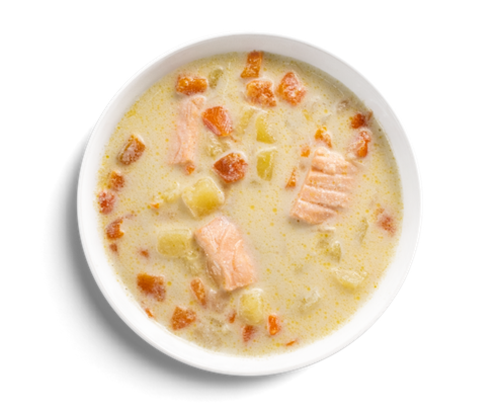

Soup with salmon and prawns
This Sciilian fish stew/soup hybrid is the best fish soup recipe in the world. Packed with halibut, salmon and prawns, it's also dairy-free and gluten-free. Throwing butternut squash into this gives a lovely colour and sweetness.
Contents
Total weight 320g
Saffron
150 grams
cherry tomatoes